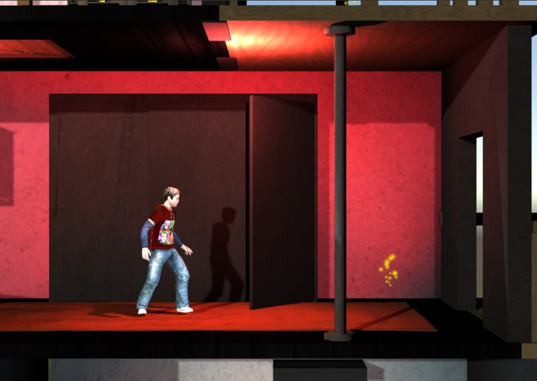
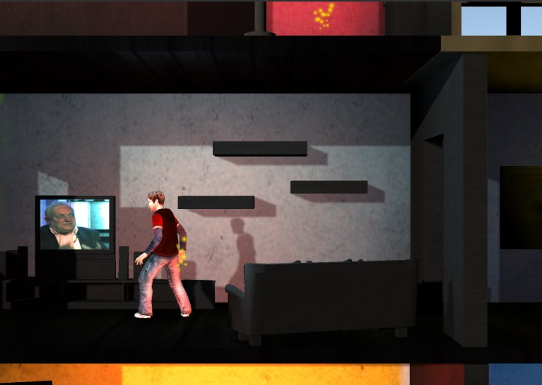
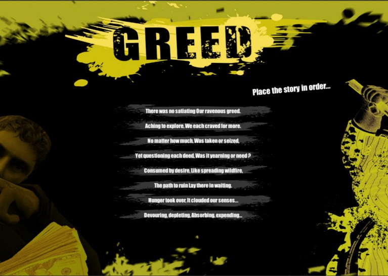
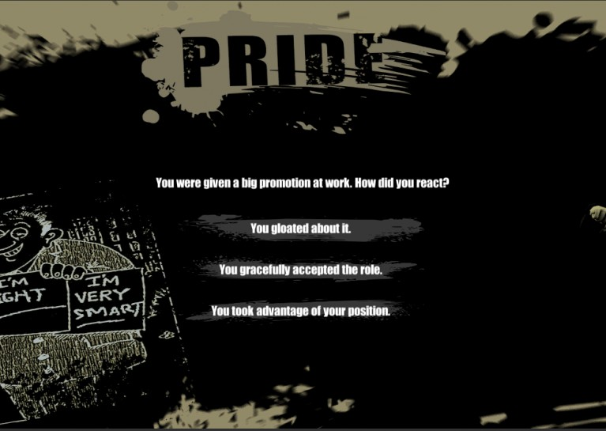

Shattered: Repair Your Identity
A narrative exploration prototype for Global Game Jam 2020 and the theme Repair. The player wakes in a house with no memory of their identity and explores rooms and prompts that reveal pieces of their past.
Telling the story through rooms and puzzles
The design uses a familiar house to make the player curious about an unfamiliar past. The screenshots show two ways to surface memories: the Greed puzzle asks the player to reorder a story, while the Pride prompt asks how the character reacted to a promotion.
My contribution
I worked on narrative beats, interaction rules, exploration pacing and audio. The sound design used ambience and short cues to build tension and draw attention to moments worth investigating.
Prototype screenshots
Select a puzzle screenshot to read the full prompt.






Post-jam ideas
Branching memories, optional fragments and an in-world journal would give players more ways to piece the story together. I’d test whether players can find the next meaningful clue using room layout and sound before adding more guidance.